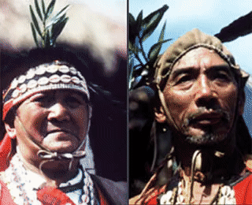
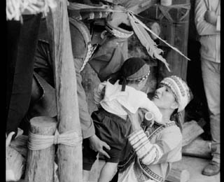
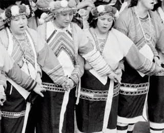
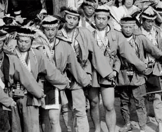

鄒族分為南北兩群，北鄒族居住在阿里山山脈一帶，故又稱阿里山鄒族，其社會結構以大社為中心，大社的男子會所是部落整體的象徵。

鄒族分為南北兩群，其中北鄒（Tsou）係指居住在阿里山山脈一帶及其西南部、自稱為（Tsou，「人」之意）的原住民，故又稱為阿里山鄒族，現有人口不及六千人。北鄒族人傳統的生活領域以阿里山山區、曾文溪流域與濁水溪流域上游為中心，東、南、北部都與布農族人的領域接壤，南方尚有魯凱族為鄰。北鄒族人傳統社會結構以包含幾個小社的大社（hosa ）為中心，三個大社為達邦社（Tapang）、特富野（Tufuya）、與魯富都（Lufutu）；前兩者納入現在的阿里山鄉。大社是北鄒族人的軍事、政治、經濟、與宗教祭儀的中心。大社的男子會所（kuba ）更成為部落整體的象徵。在部落，氏族的階序地位與聯盟關係、長老、精通儀式的專家、具有個人戰功與口才等要件決定了哪些人可以進入的統治階層。
北鄒族最重要的祭典是戰祭，主要分迎神、團結與送神祭，其中團結祭是祭典的高潮，而戰祭中的傳統樂舞，則成為族人重要的文化財。

鄒族是典型的父系社會：氏族系統與繼嗣制度皆為父系傳承；聯合家族則是基本的社會與經濟單位；宗教儀式則與經濟活動與社會組織的運作相配合。北鄒族人的歲時祭儀包括播種祭（miapo ）與收穫祭（homeyaya ）；不定期的宗教儀式則有獵神祭、敵首祭與會所建築祭等等。然而，日據以來，由於生活型態改變，與漁獵相關的祭儀逐漸消失，又因為小米的種植逐漸減少，與農事相關的祭儀亦逐漸萎縮，唯獨戰祭（mayasvi ）不衰反盛而成為北鄒族人最重要的祭典，而戰祭中的傳統樂舞，則成為北鄒族人重要的文化財。Mayasvi
的過程如下：
一、準備部分：分為道路祭與建祭
1. 道路祭（shimotsuynu ）：
mayasvi
開始之前，由巫師（joifo ）或部落首領動員全社男女清理大社通往各小社的道路、獵徑與社內通道，一方面去除疫疾；一方面強調人神之間的通路。
2. 建祭（ekubi ）：
veiyo ），回來堆放在住屋四週的草地。接著修繕男子會所，戰祭當天清晨由青年上山摘取神花木槲蘭（fiteu ，用以避免不潔之靈）。當神花抵達集會廣場（yoyasva ）祭典便正式開始。
二、正典（peyasvi ）：分為迎神、團結與送神祭三部份
1. 迎神祭（smouyu ' ho ）：
yono ）前圍成半圈，由部落首長等有力家系的年輕女眷二人帶來一隻小豬，部落首長帶領男子們刺殺小豬，並以沾血的刀向代表天神的赤榕樹大呼三聲，並將刀血抹在樹上。其後青年上樹修砍樹枝。這些習俗源自於過去的出草習俗，現在都只剩下象徵意義。接著就由頭目為首各家長老依序排成半圓，吟唱迎神曲（ehoyi ；達邦社稱為
oh ）。
2. 團結祭：
hamo
已降臨至會所內。眾男性回到聚會所內，司祭者派人帶神花祭神樹與各氏族祭屋；各氏族則供奉祭酒於會所內的神櫃並會眾們享用。隨後，舉行男孩成年禮（matkaya ），帶來社內滿週歲的男嬰上聚會所；並舉行男性成年禮。
3. 送神祭：
eyao （送天神）。反覆唱第二次送神曲時，隊伍始能緩慢移動，使缺口離開會所，意味著「鎖門」（有防止惡神進入會所之意）。當吟唱到慢的祭歌時，族中少女攜各氏族火把進入廣場中央的火堆上，唱到快的祭歌時，女性才正式加入歌舞的行列。
三、歌舞祭（pasu mayasvi ）：
接下來的兩三天歌舞竟日，而整個儀式在吟唱最後一首送神曲（送戰神）後結束。
歌謠在北鄒族人生活中，不論是信仰觀念、征戰儀式、神話傳說、部落倫理或是民俗活動，始終扮演著極重要的角色。

歌謠在北鄒族人的生活中，不論是信仰觀念、征戰儀式、神話傳說、部落倫理或是民俗活動，始終扮演著極重要的角色。例如部落最重要的祭儀「瑪亞士比」mayasvi ，整個儀式的重心就是「迎神曲」、「送神曲」、「戰歌」、「歷史頌」、「勇士頌」等祭歌。「瑪亞士比」祭典的每個活動環節幾乎都是靠祭歌來完成的。在族部落內並無嚴謹的歌謠分類，不過，對唱歌曲
pa su – i yahaena
曾是鄒族部落廣泛流行的一種歌曲形式。除了祭歌類平時禁唱外，其他歌謠都可隨時依實際情境唱出。其音樂特色以五度、三度和聲最多。祭歌大多採用平行四度、五度的奧干農複音唱法。對唱歌曲則採用偶發性的部分自由對位唱法，顯示出其自然純樸的音樂特色。
北鄒祭歌是為戰祭（mayasvi）而作的，其歌詞內容是向戰神祈求保佑與幫助，以勉勵族人學習先人的英勇事蹟。如祭歌中的戰歌（peyasvi no
mayahe）領唱者會先歌頌祭典之神聖，再頌戰神作為及祖先英勇歷史，接著才會歌頌各氏族之英勇事蹟。
北鄒祭歌的節拍有自由拍、固定節拍及四拍子三種節拍。無論是屬哪一種節拍，都必須根據領唱者呼吸快慢及舞動者身體搖擺的速度決定。
除了祭歌外，北鄒還有對唱歌曲（pasu-iyahaena）及徒歌對唱歌曲之內容廣泛，基本上有「相聚之歌」或「對唱歌曲」之意。徒歌並非歌唱形式，乃一種具有徒歌的「凱旋誦文」，是勇士征戰勝利攜回敵首在神樹（yano）下，邊頓足邊唸的「凱旋祝文」。
北鄒族傳統樂器
根據林衡立、衛惠林著《臺灣省通誌稿．同冑志》中所記載：鄒族所使用的樂器有口琴、弓琴、鼻笛、橫笛四種。至於樂器的構造與演奏方式說明如下：
口琴：
弓琴（la-dol）：
弓琴：
鼻笛：
橫笛：
此外，鄒族原有打擊樂器 ─
木杵（sipayatu），其原為農具之一種，用來舂打稻粒，非為樂器而作，是族人將一束束的旱稻放於堅硬平底的石板上，打擊後使其稻粒落下。其所使用的木杵長短、粗細、重量、堅硬度、密度都各不相同，擊觸到平底石板後所發出的音響也就不同。當眾多的人一起打擊，更可發出有節奏的音響。後來的族人覺得這樣的聲音很美，於是便流傳為樂器之一。但後來木杵在鄒族部落消失，卻仍留於邵族之中。因此目前鄒族人使用的樂器仍只有鼻笛、弓琴、口琴、橫笛。
鄒族的傳統樂器可用做獨奏或合奏，這些樂器時常組合合奏，有弓琴口琴的合奏，鼻笛、弓琴、口琴、橫笛的合奏，由於音量較小，很少作唱歌或舞蹈的伴奏。絕少用於伴奏歌曲或舞蹈；目前部落中會演奏傳統樂器的族人已經不多了。（鄭曉鳳：「鄒族民間歌謠淺談」，載蔡中涵編著，1996，《原住民歷史文化》（二），P.
977，臺北，教育廣播電臺出版）
Homeyaya 收穫祭 (原舞者演出片段)
鄒族的 Homeyaya 收穫祭，在每年七、八月小米收割完後舉行。一方面祭祀小米神，另一方面也藉此強化家族凝聚力。是鄒族最重要的祭典。
VIDEO
北鄒族人的傳統舞蹈以戰祭中合歌的舞蹈為最重要的代表。基本舞步為四步舞，整體舞蹈表現莊嚴。

北鄒族人的傳統舞蹈以戰祭中合歌的舞蹈為最重要的代表。在迎神祭與送神祭時，只有男性可以參加，當他們吟唱迎神與送神曲時，一方面採行走的步態（稱為
toekelibe ），一方面身體隨著旋律前後傾斜。雖然是簡單的動作，但是寓意深遠：「祭歌舞蹈是為了迎接戰神降臨會所而走路，要陪著戰神走路向前之意；眾人牽手有團結之意；迎神、送神時身軀向上下搖動，表示族人向天盼望戰神從天而降之意。」（浦忠勇，《臺灣鄒族生活智慧》）基本上以歌聲調節舞步，領唱者起句後，眾人和之。歌曲重複時，舞步並不間斷。
歌舞祭時，則男女皆可加入，隊形安排大抵上男性在前、女性在後；年長者又在年幼者之前，充分顯現鄒族社會的倫理。盛裝的男女族人吟歌如縷而舞步不停。基本舞步仍為四步舞，整體而言舞蹈表現莊嚴。
然而除了戰祭樂舞之外，族人在其他場合如小米豐收祭、男性成年禮乃致敬送王婚入塔山等，都有相關的歌謠以及搭配的動作序列；在一般性的娛樂活動，也可看到歡樂歌或模擬自然動物的舞蹈。除此之外，據聞鄒族耆老目前正在復原已經佚失的傳統樂舞，其中一種舞蹈稱為「諷刺舞」，原來是獵首歸來譏諷敵人首級所唱跳的舞蹈，後來衍生為譏諷整天喝酒無所事事的族人，在佚失了五十年之後，重新為人所知。這些舞蹈的型態，有助於幫助我們了解鄒族人豐富的心靈世界。
北鄒族戰祭樂舞 (原舞者演唱)
北鄒族的戰祭祭歌，歌詞内容是像戰神祈求保佑與幫助，以勉勵族人學習先人的英勇事蹟。
VIDEO